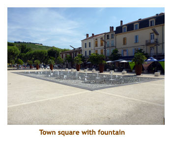

[ Home ] [ Travel ] [ Photography ] [ Pets ] [ Games] [ Rowing] [ Physics ]


Cruising on the S.S. Catherine
Travel
Cruises
Past Cruises (Diaries)
Future Cruises
Rogues Galleries
Land Trips
Diaries (Land Trips)
Hawai'i - Big Island - 04'01
Hawai'i - Maui - 05'02
Hawai'i - Big Island - 04'03
Hawai'i - Kaua'i - 09'04
Hawai'i - Big Island - 04'06
Hawai'i - Maui - 04'06
Mainland China - 05'07
Phoenix, Arizona - 12'07
Greek Isles - 05'08
Hawai'i - Kaua'i - 09'08
Hawai'i - Big Island - 09'09
Hawai'i - Maui - 05'12
Hawai'i - Big Island - 04'13
Ireland - 08'13
Mexico - Cancun 11'13
France/Belgium/Lux 07'15
Hawai'i - Big Island - 05'17
England / Wales - 06'17
Hawai'i - Big Island - 09'19
Photography
Cameras
Underwater
Pets
Tara
Blackie
Whitey
Muffy
Ollie
Rusty
Fluffy
Rufus&Dufus
Games
Rowing
Physics
Rating (out of 5):
Ship  Food
Service
Itinerary
Food
Service
Itinerary
It had been 3 years since our last river cruise and we decided that it was time to hit the river again. Of course a single cruise wasn't enough, so Marjorie looked for two cruises that we could "back-to-back". We really wanted to do the Rhone River in France so started by choosing a Uniworld cruise (that offered T/A rates) from Lyon to Avignon. We also wanted to try an AMA cruise (that offered T/A rates) in Germany, but the closest fit still left 7 days between the two cruises. So, we opted to do an intervening land tour, 2 days in Avignon and 5 days in Brussels. The Rhine cruise that we chose did a 2 day pre-stay in Prague, then Nuremberg to Luxembourg on the Main / Rhine / Mosel rivers. The travel logistics of our trip would be: fly to Lyon, cruise to Avignon, train to Brussels, fly to Prague, bus to Nuremberg, cruise to Luxembourg (Remich), fly home. We had to plan hotels for Lyon (1 night), Avignon (2 nights), Brussels (5 nights) and Prague (2 nights). Lots to organize!
It was a very busy trip that took us to 36 cities / towns / villages, most of which we had never been to before. As a result, I have arbitrarily split this trip into three diaries - this one covering the first river cruise, Lyon through Avignon, a second diary covering the land portion of our trip, Avignon and Brussels, and a third diary covering the second river cruise, Prague through Luxembourg.
The Rhone River cruise was with Uniworld, our fourth cruise with them. The ship, the S.S. Catherine, was gorgeous. The latest innovation was a small indoor swimming pool, although it didn't get much use. The service and food were excellent. My only complaint was the late dining time - 7:00 PM. Note: In 2012 Uniworld offered free beer and wine at meals only, while Scenic Tours offered free drinks any time of the day. This year Uniworld has free drinks at any time of the day. Yahoo!
The cruise was not full - only 121 passengers with room for 159 total. Perhaps
that's why they were offering T/A rates. We met a number of T/A's on the cruise.
It was a hot cruise, with temperatures being in the mid 30's each day with lots of sun.
The northern half of the cruise was in the Rhone-Alps region, while the southern half
was in the Provence region. We actually hit the Burgundy region as well when we
popped up to Beaune. Finally, there were 3 "pay for" optional excursions offered,
but we didn't do any of them. People who went seemed to enjoy them.
Pre-cruise (July 10, 11) - Getting to Lyon
July 11 - We arrived in Lyon about 2:30 PM and had pre-arranged a shuttle to
the hotel (Marriott).
Fortunately they had a room ready for us. The hotel was set next to a huge park with
gardens and a large lake. We walked around the park gardens for a while and then
went for a beer in the hotel. It was really hot out! We finally packed it in by 6:30 PM and
did the sleeping pill trick. Had a good sleep!
Day 1 (July 12) - Boarding in Lyon
Day 2 (July 13) - North to Macon (Beaune)
Day 3 (July 14) - Back to Lyon for the day
When we reached the point where the Saone runs into the Rhone, we crossed a bridge over to the Presqu'ile area where there was no bicycle pathway. The Presqu'ile is a peninsula of land formed between the Saone and the Rhone, which run parallel to each other. From here we headed north facing traffic lights, crosswalks and city traffic. When we got to the old town we parked our bikes and did a walking tour. Then we jumped back on our bikes and continued north a ways past where our ship was docked. We did another bridge across to the east side of the Rhone and encountered the wonderful parkway again, on which we rode back to the ship. We were back by 12:30 and ready for lunch. For the afternoon we relaxed and read and wandered the dock area. It was too hot to go far. For dinner I had penne pasta. At 9:00 PM we headed back ashore for a city lights tour. Three double decker buses were waiting for us, but only 8 people showed up. We sat as a small group with our tour guide on one of the open top buses and had a private tour of the city. We were back at the ship by 10:00 in time for the 10:30 Bastille Day fireworks show. From the top deck of our ship we had an excellenrt view of the show. The fireworks were launched from the Basilica of Notre-Dame de Fourviere that we had seen close up during our bike tour. Then it was to bed. My best ever Bastille Day!!
Day 4 (July 15) - Twin cities of Tournon and Tain l'Hermitage
We had lunch aboard as we set sail for Viviers. We planned to spend some time sitting on the top deck and watching the scenery, but it was very hot and the sun shades were collapsed due to some oncoming low bridges. At 3:00, Marjorie went to a cooking demo on making Crepe Suzettes. While she cooked, I did some reading and enjoyed the view from our "balcony" window. Our wall-to-wall window was split horizontally and the top pane was motorized to go up and down (like a car window), so the top half of the window could be opened. A second motor drive raised and lowered a bug screen. We attended the port talk at 6:45 and then had dinner as we arrived in Viviers. I had the veal fillets which were very good. Viviers is a small village (pop. 3,500). For our after dinner stroll (9:00 PM) we walked the short distance into the town and wandered around until the sun started to set. It was a lovely little town and we were looking forward to the guided tour tomorrow.
|  |
Day 5 (July 16) - The village of Viviers
A lovely "backyard" patio and garden was accessed from the kitchen on the top floor at the back of the house high up due to being built against the hill. Outside on the patio we were served wine, cheese, crackers and goodies that turned out to be provided by the ship. Anyway, it was really a nice treat. We were back onboard in time for lunch and heard about the other three group "treats". There was another house visit, an outdoor wine and cheese tasting, and a dance presention. After lunch there was an optional (and rather expensive) tour to a truffle farm and Chateauneuf-du-Pape. However, we weren't interested in truffles, and were going to be doing a visit to Chateauneuf-du-Pape on a Viator tour later when we would be staying in Avignon (after the cruise). For the rest of us we were sailing to the small village of Chateauneuf-du-Pape (not to be confused with the appelation or area of Chateauneuf-du-Pape where the famous wines come from) to pick up the optional tour group (at about 6:00 PM). For dinner I had an excellent rack of lamb as we continued to sail to Avignon. After dinner we did a quick walk along the waterfront of Avignon, where an arts festival was underway. There was a large market selling food, clothing, handicrafts, etc and a huge ferris wheel. It was getting dark so we headed back aboard for bed.
Day 6 (July 17) - First stop in Avignon
We were up at 6:30 on another hot 36 degree day. We had breakfast and then headed out on a walking tour of Avignon old town. There was an all day optional tour ($$$) offered for a cooking class at the famous La Mirande Hotel, but most of us opted for the shorter walking tour. As we exited the ship, immediately ahead of us was the famous Pont d'Avignon (officially Pont St. Benezet ), constructed in the 12th century and washed away several times. With its three arches it appears to span half way across the river. However, the left bank is actually an island, so the original complete bridge had 22 arches, crossing both legs of the river plus the island in between. Nearby the ship were the fairgrounds and ferris wheel we had explored last night but this wasn't part of the walk. Instead, our tour took us past the city walls and fortifications, and through the old town. It was hot!!
 |
We spent most of the time exploring the Pope's Palace. It was built during the period 1309 - 77, when the popes took up residence at Avignon instead of at Rome, primarily because of the current political conditions. I guess the pope build such a large palace to show the peasants what a great guy he was. The palace complex was huge. It is now mainly empty and devoid of the murals and frescos that once covered the walls and ceiling. Still impressive though. Walking through the streets of Avignon, we encountered many buskers and groups advertising for live theatre, concerts, etc. This was all to do with the annual arts festival. We were back to the ship by 12:30, in time for lunch. For the afternoon, we relaxed in the air conditioned ship reading, checking email, wandering around, etc. We did do a short walk along the dockside to see some other cruise ships, and Marjorie actually invited herself aboard a Viking ship and was given a bit of a tour while I sat outside in the shade and waited. Then it was back into the air conditioning. For our "farewell" dinner I had chateaubriande. Very good, but calling it "farewell" was kind of jumping the gun. To bed.
Day 7 (July 18) - Arles and Tarascon
We had lunch and still felt that we were all toured out, so decided to skip the Tarascon walking tour. However, a while after the tours had left we felt better so decided to explore the town on our own. It was mid-afternoon so the streets were empty (siesta time). In southern France most of the businesses close from 1:00 to 4:00 (or there abouts). We enjoyed our walk around especially the medieval castle (Chateau de Tarascon) and the church (St. Martha's Church). At the castle we crossed the drawbridge and explored the castle. Some of the inner areas were open to the public, while other areas you needed a ticket. We just did the public areas. It was really hot by this time. Time for the ship! We were back to the ship about 4:00 and had a drink in the lounge. We read for a while to fill in the time until dinner and did some of our packing. For dinner I had pork medallions. Very good. Then it was back to our room to finish packing. Unlike ocean cruising, we didn't need to put out our luggage until 8:30 AM tomorrow, but we still completed our packing ready to go. Then it was time for bed.
Day 8 (July 19) - Disembarking in Avignon
We appreciated several changes that Uniworld had seemingly recently made. Firstly the "all the time" drink package was really nice. Secondly the splitting of the groups for separate wine tastings was nice as the group size wasn't overwhelming. Lastly, the addition of guided bike tours in some of the ports was great. One thing we did miss was the variety of local musicians brought on for the evening entertainment. Instead we seemed to get a lot of the ship's pianist / singer combo most evenings. Cost cutting?
Here endith the diary of our Rhone River cruise. You can read about the rest of our trip
in the diaries covering the land trip to
Avignon and Brussels,
and the second cruise from
Prague to Luxembourg.